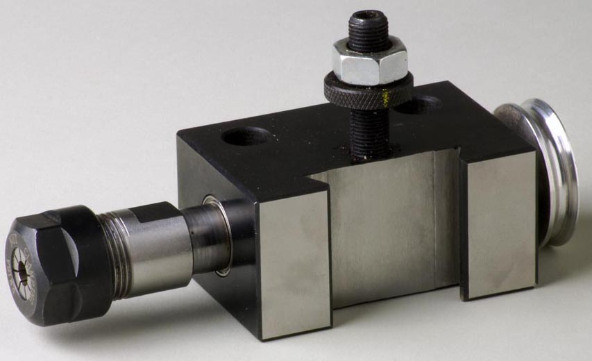
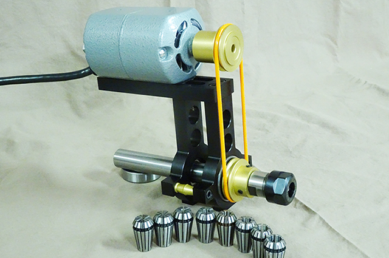

|
|

|
Drill Spindle |
Overview

Drill Spindle Image courtesy Bill Ooms 
The Drill Spindle (also called a drilling frame by many) is similar to a drill in the way it works. For use, it is held in a quick change tool post (QCTP), and the QCTP is bolted to an cross slide. Drilling bits take various shapes, and some examples from Holtzapffel's Turning and Mechanical Manipulation, vol. 5 - The Principles and Practice of Ornamental or Complex Turning are shown to the left. New drilling bits, made with carbide cutting surfaces, are available from Chris Ploof at Ornamental Tools and a few other places. The newer style drilling bits are typically held in a collet (one is shown in the picture to the right), but Jacobs drill chucks have also been used. It is also common to use milling bits in a drill spindle. When using such milling bits, 2-flute bits are recommended as they are better for evacuating chips when milling wood. Whether a drilling bit or a milling bit is used, that bit (AKA, a cutter) is traditionally rotated in the drilling spindle using an overhead drive. Direct drive approaches can also used but they are more rare. (An example of a direct drive approach is shown above on the right.) As with cutting frames, drill spindles can be purchased from a number of vendors (see also, Buying a Rose Engine Lathe), or you can make your own. | ||
| ||
Notes on making oneCutting Frames are not hard to make if you have a metal lathe (or access to one). A milling machine is also useful, but not required. If you wish to make your own Drill Spindle, Bill Ooms has provided great directions. | ||
More InformationPublished Articles
|